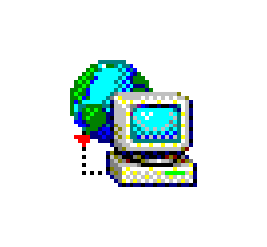

The Early Internet
Looking Back at the Web: 1995–2005
You are visitor # 00123456 since June 1, 2000
Welcome!

The Internet in the early 2000s was very different from the Internet we use today. Websites were simpler, connections were slower, and many people were just beginning to explore online communities, search engines, email, and instant messaging.
During this time, many users connected through dial-up modems, visited websites like Yahoo and GeoCities, chatted on AOL Instant Messenger, and downloaded music through services like Napster. These tools helped shape the online culture that later became social media, streaming, and mobile Internet.
This website explores how people connected, what websites were popular, and how the Internet changed from a slow desktop experience into the always-connected web we know today.